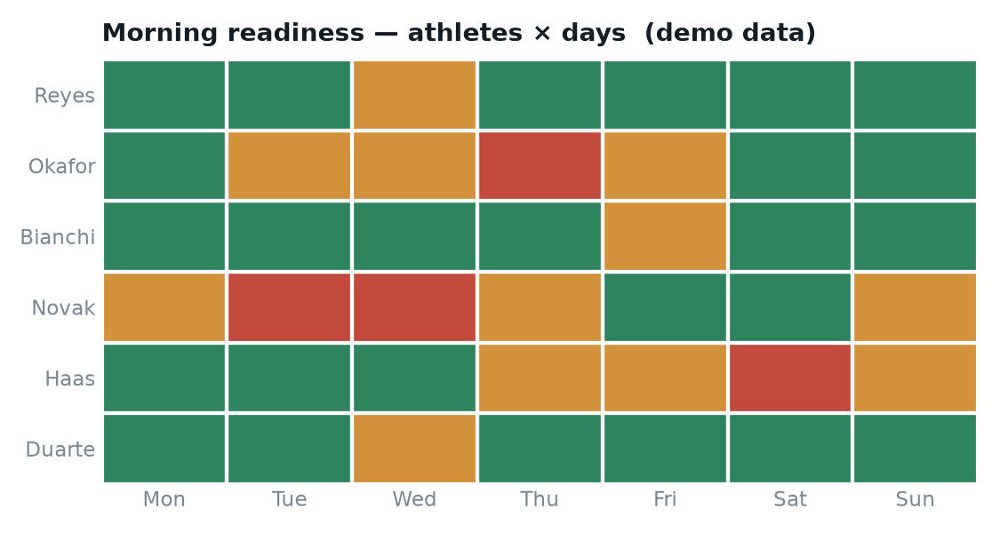

Readiness & Recovery Tracker
A no-code Excel workbook staff open every morning — five quick wellness inputs per athlete become one readiness score and a red/amber/green grid that flags who needs a modified session before training starts.
The problem
Wellness questionnaires are only useful if staff can read them in the 10 minutes before a session — and if “6/10 sleep” is judged against that athlete’s own normal, not a squad average.
This workbook keeps the athlete’s job to five taps — sleep, soreness, stress, fatigue and HRV-based recovery — and does all the interpretation itself, so coaches get a decision, not a spreadsheet.
The morning grid
Each input is z-scored against that person’s own 7-day baseline, combined into a single readiness score, and coloured green–amber–red. A coach scans one grid and instantly sees who to check on.

What it shows
- Per-athlete normalisation — z-scoring against a rolling personal baseline, so flags are individual, not one-size-fits-all.
- Zero-code delivery — athletes only type inputs; scoring and colour are automated with Power Query and conditional formatting.
- Designed for adoption — 30 seconds to log, one glance to read. The tool that gets used beats the clever one that doesn’t.
4 red flags across the week — each an athlete whose readiness dropped below their personal baseline and who’d be worth a modified warm-up or a quick check-in.